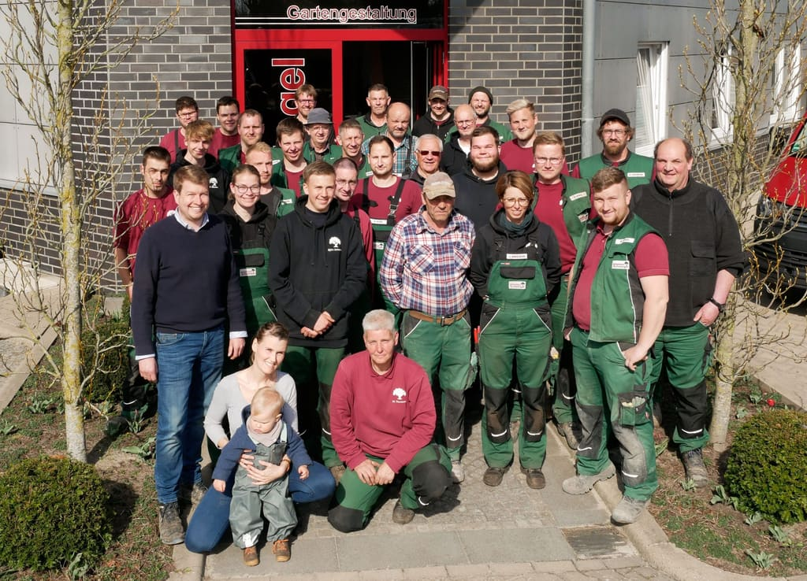
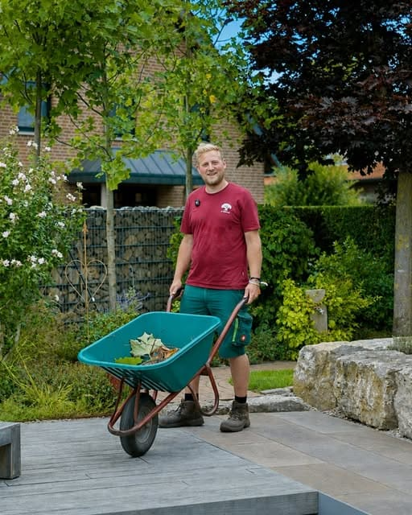
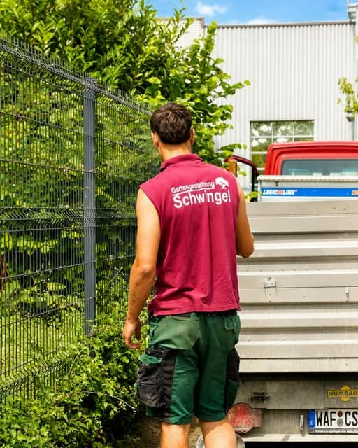
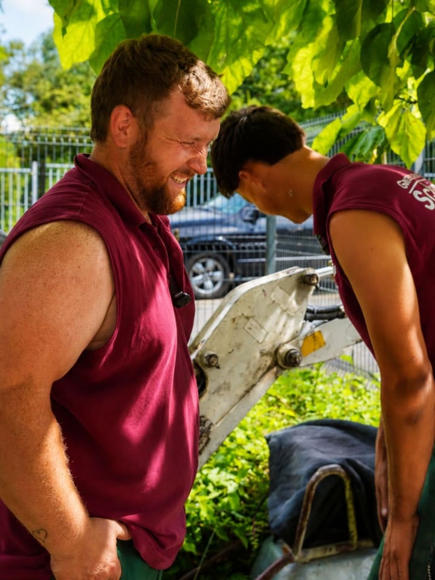

Garten- & Landschaftsbau · Enniger
Gärten mit Handschrift.
Wir erkennen Ihre Wünsche, prüfen die Umsetzbarkeit und visualisieren Ihren Garten handcoloriert – um ihn anschließend Wirklichkeit werden zu lassen. Vom privaten Kleingarten bis zum Großprojekt.
- Seit 1991 in Enniger
- Mitglied im Bundesverband GaLaBau
- Ausbildungsbetrieb seit 2003


Das sind wir
Ein eingeschworenes Gartenteam.
Der Betrieb Schwingel steht mit seinen gut ausgebildeten Mitarbeitern für qualitativ gute Leistung und optimalen Maschineneinsatz.
Egal ob Großprojekt oder privater Kleingarten: Wir erkennen Ihre Wünsche, prüfen die Umsetzbarkeit, bringen zusätzliche Anregungen ein und visualisieren Ihren Garten handcoloriert. Wir freuen uns auf einen persönlichen Umgang – gemeinsam mit Ihnen und unserem Team.
Landschaftsgärtnermeister Gesellen Maurer Friedhofsgärtner Betriebsschlosser Auszubildende
- 1991Gründung im Nebenerwerb
- 1996Vollzeitbetrieb
- 1999Ca. 10.000 m² Gewerbefläche in Enniger
- 2001Beitritt Bundesverband GaLaBau
- 2003Anerkannter Ausbildungsbetrieb
Leistungen
Unser Leistungsspektrum.
Von der ersten Skizze bis zur regelmäßigen Pflege: acht Gewerke, ein Team – für Hausgärten, Vorgärten, Terrassen, Einfahrten und öffentliche Anlagen.
-
Kreativ und funktional
Damit der Traum vom perfekten Garten Wirklichkeit wird, bedarf es einer durchdachten Planung. Wir führen die gestalterisch-kreative und die funktionale Planung zu einer stimmigen Gesamtkonzeption zusammen – handcoloriert visualisiert.
-
Trockenen Fußes gehen
Wege, Sitzplätze, Terrassen, Garageneinfahrten oder Innenhöfe – praktisch zu benutzen, leicht sauber zu halten und nach Regen schnell wieder trocken. Mit Natursteinen wie Granit und Gneis oder mit Betonsteinen.
-
Wunderwerk Natur
Die Jahreszeiten kommen und gehen und hüllen den Garten in ein neues Farbenkleid. Stauden mit ihren Farben und Strukturen sind wie Ölfarbe und Pinselstrich für ein lebendiges Gartenbild. Bepflanzungen jeglicher Art.
-
Wasser belebt Ihren Garten
Ob Teich- oder Wasserbecken, Bachlauf oder Feuchtbiotop: Wasser verbessert das Kleinklima, Wasserpflanzen mehren die Gartenvielfalt und reinigen das Wasser biologisch. Wir beraten Sie in einem kostenlosen Beratungsgespräch.
-
Der perfekte Rahmen
Ein Kunstgemälde braucht einen vernünftigen Rahmen – und so auch Ihr Garten. Holz-, Stahl- oder Steinzäune, Gabionen oder Hecken: Wir planen mit Ihnen die beste Einfriedungsvariante und sind Ihr Ansprechpartner für Instandhaltung und Reparatur.
-
Für die optimale Pflanzenentwicklung
Regelmäßige, kontinuierliche Pflege ist unverzichtbar für die Entwicklung Ihrer Pflanzen und die Werterhaltung Ihres Gartens. Bäume und Sträucher schneiden wir in der Ruhephase – in der Regel im Spätwinter.
-
BildplatzProjektfoto Baumfällarbeiten folgt
Mit geprüfter Kompetenz
Baumfällarbeiten gehören fest zu unserem Leistungsspektrum. Zu unserem Team gehört ein FFL-zertifizierter Baumkontrolleur. Sprechen Sie uns zu Ihrem Vorhaben an.
-
BildplatzFoto Grabgestaltung folgt
Mit viel Einfühlungsvermögen
Die regelmäßige Grabpflege gehört ebenso zu unseren Aufgaben wie die Neugestaltung von Gräbern. Individuelle Wünsche und traditionsreiche Gestaltung – mit viel Einfühlungsvermögen und höchster Professionalität.
Warum Schwingel
Handwerk, auf das Sie bauen können.
Wir erkennen Ihre Wünsche, prüfen die Umsetzbarkeit, bringen zusätzliche Anregungen ein – und setzen Ihr Projekt mit eigenem Team und eigener Technik um.

-
1991
Gewachsene Erfahrung
Gegründet in Enniger – vom Nebenerwerb zum Fachbetrieb mit eigener Gewerbefläche von ca. 10.000 m².
-
25
Gut ausgebildete Mitarbeiter
Landschaftsgärtnermeister, Gartenbautechniker, Gesellen, Maurer, Friedhofsgärtner, Betriebsschlosser und Auszubildende.
-
Plan
Individuell geplant
Gestalterisch-kreativ und funktional – handcoloriert visualisiert, bevor der erste Spatenstich erfolgt.
-
Technik
Optimaler Maschineneinsatz
Auf unseren Baustellen setzen wir modernste Technik ein – vom leichten bis zum schweren Gerät.
- Mitglied im Bundesverband Garten-, Landschafts- und Sportplatzbau e. V. seit 2001
- Anerkannter Ausbildungsbetrieb seit 2003
- Großprojekte & private Kleingärten

Ihr Gartenprojekt
Aus Ideen
werden
Gärten.
Neuanlage, Umgestaltung oder Pflege – erzählen Sie uns von Ihrem Vorhaben. Wir beraten Sie persönlich, planen individuell und setzen mit unserem Team sorgfältig um.
- Beratung · Planung · Kalkulation
-
- Matthias LohmannGeschäftsführer
- Christian SchwingelBeratung · Planung
- Thomas BonkampGartenbautechniker